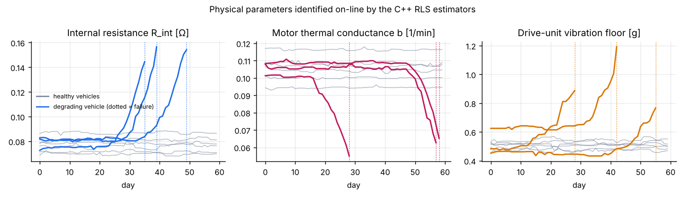
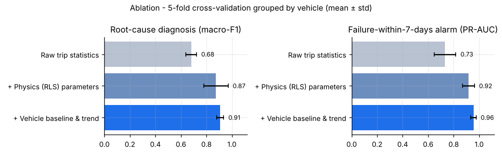

From raw sensor streams to a workshop decision
An embedded-style C++17 core identifies physical parameters on-line, as a BMS or motor ECU would. A Python pipeline then turns them into fleet-level prognostics with honest, leakage-free evaluation.

Physical parameters estimated on-line by the C++ RLS estimators. Healthy cars (grey) stay flat despite manufacturing spread, while degrading cars drift clearly before they fail (dotted line).
01 · IN-VEHICLE · C++
Stream & identify
Constant-memory Welford statistics and three RLS estimators turn each trip into 17 physics-informed features. No time series needs to be stored.
02 · FLEET · PYTHON
Compare to itself
Each car is compared against its own early-life baseline, which removes manufacturing spread. Every feature is strictly causal, so it could run live.
03 · DECISION
Warn & diagnose
A gradient-boosted classifier names the failing part. The alarm needs two consecutive trips to confirm and is tuned to a 1% false-alarm budget.
| Component | Model | Estimated parameter | Degradation signature |
|---|---|---|---|
| HV battery | V = OCV(SoC) − R·I | Internal resistance R | R rises as cells age |
| Traction motor | ΔT = a·I² − b·(T − T_cool) | Thermal conductance b | b drops as the coolant pump wears |
| Drive unit | vib = v₀ + k·speed | Vibration floor v₀ | v₀ rises with bearing wear |

Ablation study: each layer of the design measurably improves the result (5-fold cross-validation, grouped by vehicle).